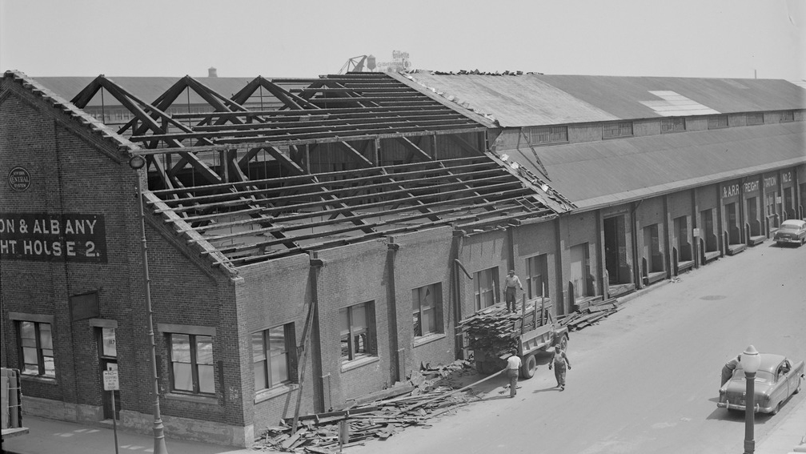
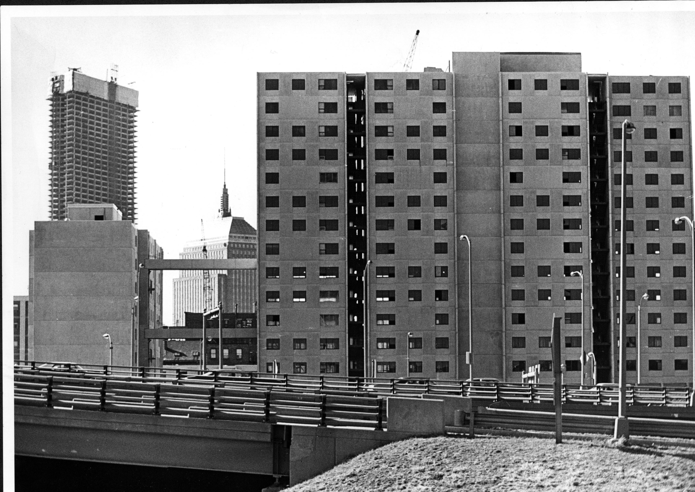

Being forgotten
Boston Public Library, one of the largest public libraries in the U.S., is a pioneer in terms of programs and services. Though it has 24 branches citywide, Boston’sdenselypopulated and vibrant Chinatown would not have a branch for decades.
“When I heard about how Chinatown didn’t have a permanent branch, I thought it was kind of crazy. Where could the kids read books?” said Vivian Wu-Wong, a history teacher at Milton Academy. Growing up in a Taiwanese family as a first generation Chinese-American in Cherry Hill, NJ., Wu Wong was shocked when she moved to Boston and found there was no library.
The construction of the Central Artery not only took away the library from Chinatown residents, but displaced hundreds of Chinese-American and immigrants families who used to live on Hudson and Albany Street. Aditi Mehta, now an assistant professor at the University of Toronto who researched a study on the Chinatown library in 2010 for her doctoral degree at MIT’s Department of Urban Studies and Planning, believed that the decision of whether to have or not have a library largely depended on the values of urban planning at the time.

The City demolished Hudson Street to make room for Turnpike Extension. (Image Courtsey of Wing Kai To and Chinese Historical Society of New England.)

Chinatown Central Artery construction near Albany Street. (Image Courtsey of Leslie Jones.)
“A library was not in the position of modernization at that time. For them [the city and policy makers], community development in Chinatown was more about physical rebuilding and expansion - that was modernization,” said Mehta.
The Immigration Act of 1965 abolished the 1882 Chinese Exclusion Act, bringing many Chinese immigrants into Chinatown. At the same time, with a sizable portion of Chinatown residents forced to move out because of urban renewal, the library movement lost its momentum.
“The library wasn’t a priority [in Chinatown] because the community was undergoing so many issues and trauma at that time,” explains Mehta referring to the displacement due to the construction of Central Artery, as well as language barriers, high unemployment, the lack of affordable housing, and anti-Asian violence. “When a community has those kind of urgent issues, a library can get left behind.”
There was no way for the city to see or understand the dynamic and needs of Chinatown while it was overlooked because of its poverty and disorganization. “In the beginning when the library was established, it has a very clear role which I called as ‘assimilation processing center’ - it was made to teach how to make immigrants Americans and control them,” said Mehta. “Once that [perception] got left behind, and there was a sort of fear in the same way as xenophobia, the neighborhood [Chinatown] became invisible and unimportant. All the decisions were made based on measurements and quantitative data rather than the real need of the community.”

Mass Turnpike Extension was built by Chinatown.(Image courtsey of Phil Preston.)
David Moy, the former director of Boston Chinatown Neighborhood Center, told Mehta in 2010, “There was never any talk of getting our own library. You don’t miss what you don’t know about - I never thought that we should have our own branch library.”
The fact that Chinatown was powerless and voiceless for the needs of a library service, erased it from the city’s blueprint - during the year Chinatown has no persistent library service, almost every other branches have had renovation projects, big or small.
Mehta said, “I think there were discrimination against the immigrant community. When the budgets were cut, it was always the priority to serve the educated population rather than immigrants neighborhoods at the time.”